How the 24 Khan Kids assessments line up with the DRDP (2025), the DRDP (2015), and California's Preschool/TK Learning Foundations. Pick a crosswalk to see each measure or foundation beside the Khan Kids assessments that provide evidence for it.
The Khan Kids assessment asks children to do what the DRDP measure's descriptors outline. In the CSV export, Khan Kids names the measure and suggests a developmental level for it, such as Building Middle or Building Later, based on the child's results.
The Khan Kids assessment draws on the skill but does not match the measure's descriptors. Results can be added as one more piece of evidence, alongside your observations, but they do not point to a level. In the CSV export, Khan Kids names the measure without suggesting a developmental level.
Each row is one DRDP (2025) measure, the item a teacher rates on California's current observational assessment. Next to it is the Khan Kids assessment that corresponds to it, then any assessments that draw on a related skill while measuring something else.
Each row is one DRDP (2015) measure, from the version of the DRDP most California programs used before the 2025 revision. Next to it is the Khan Kids assessment that corresponds to it, then any assessments that draw on a related skill while measuring something else.
Each row is one learning foundation, a numbered standard from California's Preschool/TK Learning Foundations. Next to it is the Khan Kids assessment that corresponds to it.
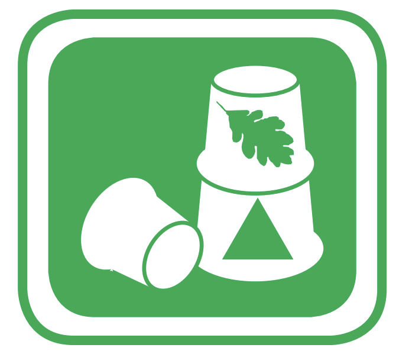
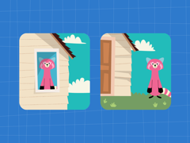


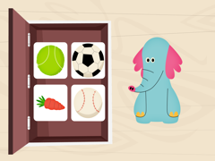
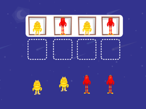
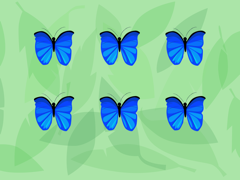

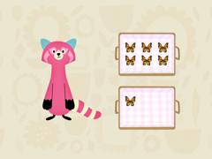
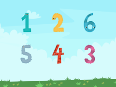
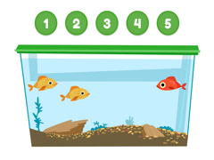
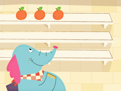

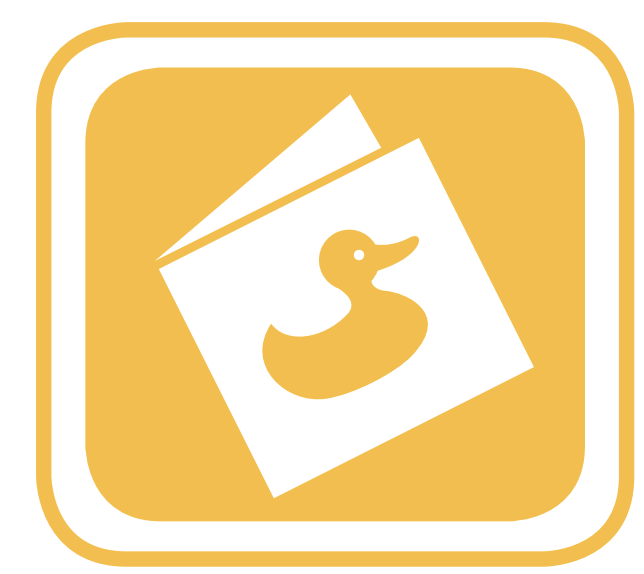


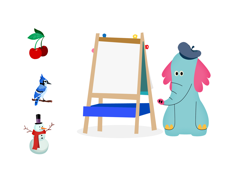
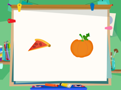


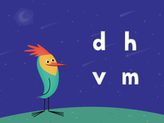
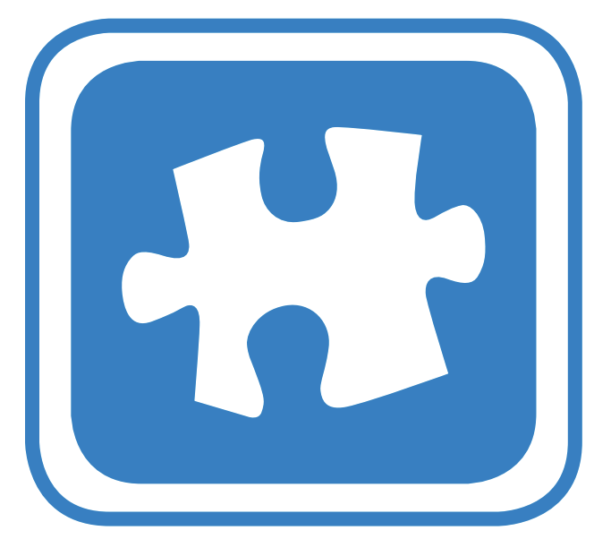
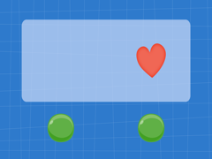
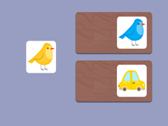
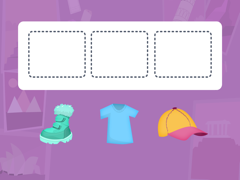
Khan Kids measures language and literacy skills in the language of administration, English or Spanish. It does not measure progress in acquiring English, which is what these foundations describe. No Khan Kids assessment corresponds to a foundation here.